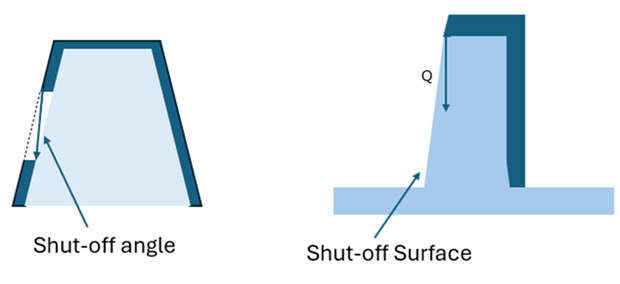
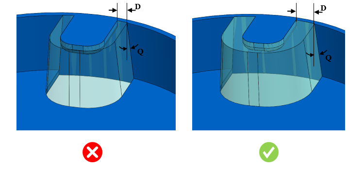

本ルールは、入力値に基づいて最小シャットオフ角度を識別します。
シャットオフとは、金型の 2 つの部分が互いに当接し、樹脂が通過するのを防ぐ箇所を指します。また、スライドがコアまたはキャビティに当接するインターフェースを指す場合もあります。シャットオフ面が金型の開閉方向と平行な場合、金型部品同士が擦れ合うのを防ぐために、抜き勾配を設ける必要があります。
引き抜き方向に沿ったコアおよびキャビティの界面において、部品に最小シャットオフ角度およびシャットオフリリーフを確保することで、擦れを生じさせることなく、コアとキャビティの表面を円滑に分離することができます。
一般的な指針として、最小シャットオフ角度は 5 度以上（>= 5 度）とする必要があります。
DFMPro は、リップフィーチャー、スナップフィット、壁面の切り欠きなど、コアおよびキャビティ金型が互いに摺動する部品内のシャットオフ位置を識別します。シャットオフリリーフの入力値に基づいて、十分なシャットオフ抜き勾配角度が設けられているかをチェックします。シャットオフ抜き勾配が不十分な場合、ルールはエラーとして検出します。以下のケースでは、シャットオフ箇所が識別されます。


ここでは、
Q = シャットオフ角度
D = シャットオフリリーフ
注記：
本ルールは、コア面とキャビティ面が接続されているシャットオフ領域を識別します。そのため、シャットオフ領域を正しく検証するには、正しい引き抜き方向の設定が必要です。